As I keep on exploring the internals of the machine that animated so many hours of my childhood, I came to study its GFX system.
The CPS-1 was a powerhouse at the time of its release. Capcom's 1989 marvel was capable of composing across six layers, stacked in any order. Developers could use three tilemap "background" layers (SCROLL1, SCROLL2, SCROLL3), one OBJ layer (where tiles are aggregated into sprites), and two starfields (STAR1, STAR2).
There is a fun way to study how these layers were used by modifying Mame's video/cps1.cpp driver. The rest of this article explores CPS-1 games architecture using color codes.
= SCROLL1, = SCROLL2, = SCROLL3, = OBJ, = STAR1, = STAR2.
Forgotten Worlds was the very first title released on the platform. Could it be that Capcom wanted to showcase the power of their new machine, the game very first scene features all layers.
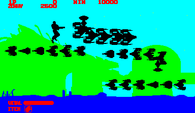Notice the choices made by the developers where they placed GUI elements in SCROLL1 ( ). This may seem surprising because a tilemap forces elements to be aligned on a grid with regards to each others. Using the OBJ layer would have allowed GUI elements to be placed anywhere on the screen.
It is in fact a favorable trade-off since GUI elements are mostly aligned anyway but more importantly the machine is limited to 256 tiles on its OBJ layer. OBJ tiles must be used wisely.
The same year, Capcom released the sequel of their hit from 1985, Ghosts 'n Goblins. Despite its Ikarugesque[1] difficulty, the game was very well received.
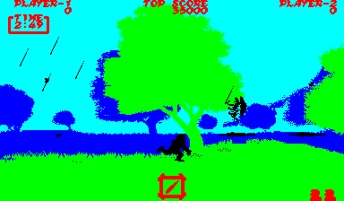Notice how, once again, SCROLL1 ( ) is used for GUI. It is not a random choice. SCROLL layers have different tile size where SCROLL1 ( ) uses 8x8 tiles, SCROLL2 ( ) uses 16x16 tiles, and SCROLL3 ( ) uses 32x32 tiles. Designers logically used the one with the finest granularity.
Besides, zombies, Red Arremer, and unforgiving controls, Arthur must also face the elements. A little bit after the start of Level 1, rain starts to fall.
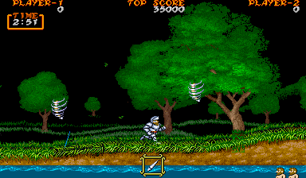But, as we have just seen, nearly all layers are used. STAR2 can only generate tiny dots so it is of no help here. How did they make it rain?
Easy. When it rains, every four frames, the GUI is not displayed in favor of rain tiles.
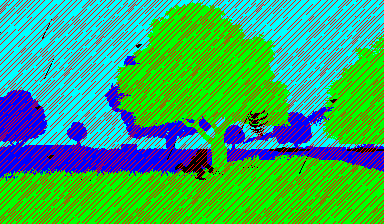The human eye and CRTs of the time blend it all together.
Strider was an ambitious project with interesting ideas. One of them is that it occasionally combined OBJ tiles not to make several small enemies but to build one humongous opponent. That was an impressive effect at the time.
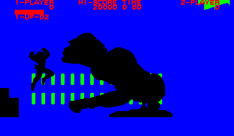Strider also features non-aligned surfaces with which the hero integrates well. It is even more of an achievement when you see that Hiryu interacts with SCROLL3 ( ) but also the OBJ layer ( ).
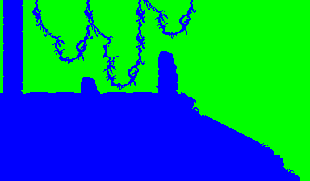Final fight was done on a tight GFX budget. At the time, ROM prices was so high that artists were only allocated 2MiB. That did not prevent them from producing one of the best hit of the platform.
All layers have a priority that can be set freely. Here we can see that SCROLL3 ( ) has the lowerst priority to serve as skyline. Then SCROLL2 ( ) for the fighting area. Then come the OBJ ( ) where we see characters, barrels, and tires and finally the GUI on SCROLL1 ( ) has top priority.
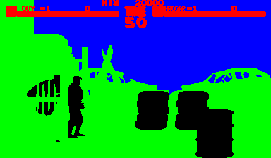That all makes sense until we look at Mike Haggar which seems to be both in front and behind SCROLL2 ( ). This is made possible by "priority mask" which grants special property to the layer behind OBJ. Tiles can be assigned such a mask to have some of their colors appear over OBJ instead of being occluded. In this case, colors , , , and are marked as such, resulting in a staircase sandwiching the characters.
The intro of Carrier Air Wing is particularly cool. Not only because it is gorgeous but because it features effects that should not be possible to a tile engine. First, there is the horizontal stream left behind by the F-14 which expands one line at at time, a granularity the machine cannot reach. Then there is a fizzlefade effect that happens on a per pixel basis.
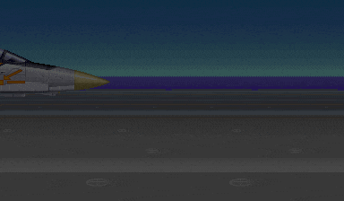As the layers view reveals, this is all done via OBJ tiles, alike the smooth Street Fighter 2 energy bar[2] . The fizzlefade is in fact a precomputed pattern across several tiles, repeated over and over. As often, when things move very fast, the human eye tends to fill the blanks.
Street Fighter 2 is a peculiar title because developers decided to use SCROLL1 ( ) to better the parallax effects instead of using it for GUI. As a result, it is fully implemented with OBJ tiles ( ) .
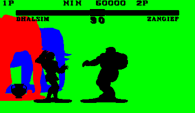There are also weird things like Guile stage where the cockpit and the tail of the F-16 are partially done with OBJ ( ).
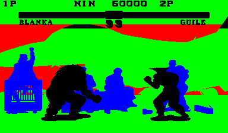
A GFX ROM is divided in four areas at the hardware level. There is one area for each SCROLL plus one for the OBJ layer. The size of these areas is decided at the beginning of the development and set in stone in EPROM.
My theory about this weird background is that artists ran out of space on SCROLL2 ( ) layer and finished the background with OBJ tiles which they had a small excess of.
SCROLL2 ( ) is famous for having a special power. Originally it was not a very useful feature until Street Fighter 2 came along and used it to implement a per-line floor parallax effect. It works by horizontally scrolling tiles on a per-line basis.
Back in the days of SF2, the arcade boards’ specs weren’t as good as they are today, and there was a limit to how many sprites could be displayed on screen at once. We carefully planned things out so that the biggest character and the second biggest character could just barely fit on screen at the same time. But when mirror matches became possible in Champion Edition, that meant that we had to be able to display two copies of the biggest character on screen. We ended up having to remove back- ground elements and such.
- Akira Nishitani, Producer (Capcom)
Sure enough, if we checkout Ryu's stage from the original SF2 we can see that the art team used a lot of sprites to make it prettier. As it stands this scene accounts for nearly 200 tiles on the OBJ layer ( ).
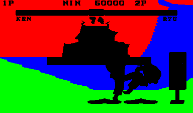In order to allow bigger characters (a.k.a Zanghief or Honda) to face their mirror on this stage, the "wind, forest, fire, mountain" ("風林火山") sign was removed. To make up for it, the scroll palettes were also reworked resulting in round happening at night instead of sunset.
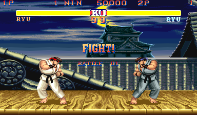
One of the last CPS-1 game was the iconic SF2 Hyper-Fighting (a.k.a Turbo). The title screen is made of mostly black except for the logo. This effect is achieved by giving STAR1 ( ) max priority over other SCROLL layers and setting all its palettes to black so stars are not visible.
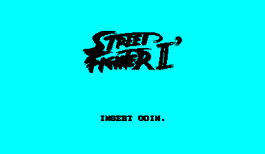Perhaps it is the most poetic aspect of the machine. Most of the time, when you see a large portion of black, you are actually looking at the night sky.
| ^ | [1] | Ikaruga |
| ^ | [2] | STREET FIGHTER 2, Subtle accurate animation |